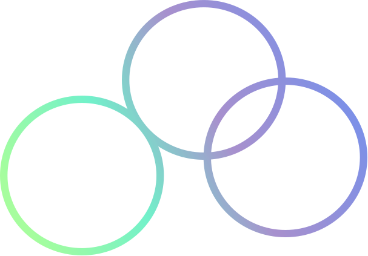

Work
Contact
Art
Resume’

Hi,I am Randal Reiner, a junior UX/UI designer based out of San Antonio, Tx. I began drawing at a very young
age and have always been fascinated with art in it various forms. As an adult, I pursued a career in
culinary arts because it gave me an outlet to combine my art passions, knowing that I was making things
people loved. After my tenure as a kitchen manager, I decided to chase my love of art and creation even
further, which lead me to becoming a designer. As a graffiti and digital artist, I am always pushing the
boundaries of my work, using my artistic abililites to inspire others. I use paper, walls, and even shoes as
my canvas to present art in many different ways and that is why I enjoy being a designer. I have the need to
share my art with the world and to put happiness on the faces of others to make their days a little brighter
than yesterday.
As a user researcher I begin by deciding what type of information I am trying to obtain and what research
methods I should apply to gain that information. I draw up a proto-persona using Figma, Miro, or Adobe XD to
draw a hypothesis. There after I hold user interviews with a series of qualitative and quantitative questions,
pressing for more information using the 5 whys. For example: “ How often do you buy mobile apps for fitness
purposes? “” Why do you do you change apps?”using Google docs to record my notes. I analyze the data to build
a Empathy map and User Persona in Figma, Adobe XD, or Miro. Giving the user/ group a relatable voice so that
we could further understand pain points, feelings, thoughts, and needs.
Paper and Pencil
Adobe XD
InVision
Google Drive
Photoshop
Miro
Figma
Trello Board
Zeplin
Visual Studio Code
GitHub


Resume’
Contact
About
Art
2022